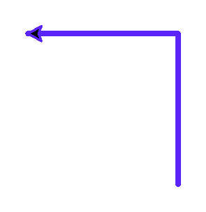

Глава 6 · Рисуем классные вещи с помощью Turtle
Заставляем черепашку менять направление
Кроме относительных поворотов left()/right(), у черепашки есть способ задать направление абсолютно — вне зависимости от того, куда она смотрела раньше.
Команды left()/right() из
предыдущего раздела поворачивают черепашку относительно её текущего курса.
Иногда удобнее задать направление абсолютно — «смотри строго на север»,
независимо от того, куда черепашка смотрела раньше.
Абсолютный курс: setheading()
setheading.py
import turtle
screen = turtle.Screen()
screen.setup(width=480, height=400)
artist = turtle.Turtle()
artist.pensize(3)
artist.pencolor("#5B24F9")
artist.setheading(90)
artist.forward(100)
artist.setheading(180)
artist.forward(100)
screen.exitonclick()Результат выполнения

setheading_kod.py
artist.setheading(90) # смотрим строго вверх, неважно, куда смотрели раньше
artist.forward(100)
artist.setheading(180) # смотрим строго влево
artist.forward(100)Возврат домой: home()
Возвращает черепашку в исходную точку (0, 0) с исходным курсом (0°) — удобно, чтобы начать рисунок заново, не создавая нового объекта:
home.py
artist.home()heading() — узнать текущий курс
Если нужно не задать курс, а узнать его — используйте
artist.heading(): она возвращает текущее направление в градусах, не меняя его. У setheading() есть и короткий псевдоним — seth().Практика: setheading(), heading() и home()
Модуль turtle открывает нативное окно Python — выполните локально в VS Code, PyCharm или Jupyter
Практика выполняется локально